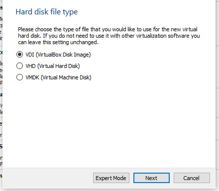
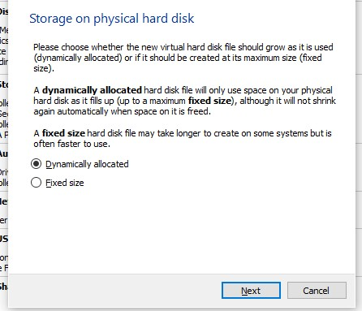
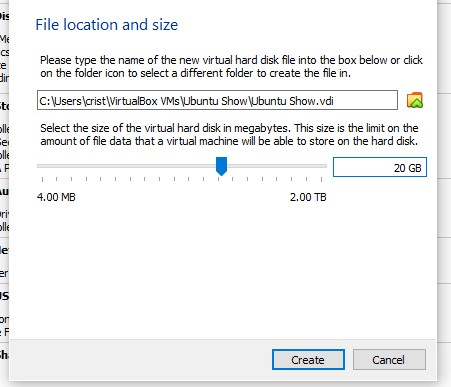
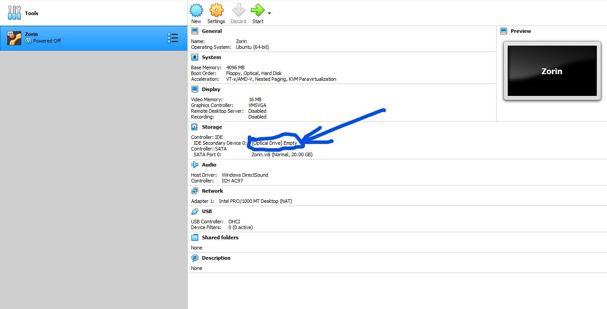
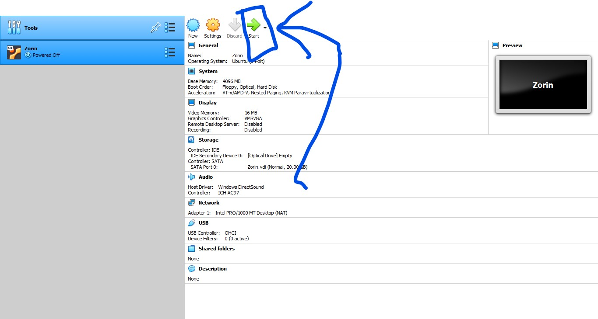

A primeira dúvida que já surge em meio a tudo isso é a grande pergunta “por que o Linux, e não um Windows até mesmo um Mac OS?”. Nada impede de usar alguma dessas duas alternativas. Ambas são ótimos sistemas operacionais que possuem fãs ao redor do mundo todo.
No entanto, optaremos pelo Linux por sua facilidade em baixar pacotes, realizar configurações mais a fundo no sistema e sua velocidade de instalação para tudo o que é necessário nesse tutorial. Além disso, não podemos esquecer seu principal ponto forte que é o preço, já que qualquer distribuição Linux é totalmente gratuita em todo seu processo, desde a instalação, até seu uso. Com isso, qualquer um pode baixar da internet um destes exemplares e assim realizar o passo a passo.
Tendo tudo isso em mente, optaremos pela distribuição Linux mais popular, o querido e clássico Ubuntu. Ele pode não ser a melhor distribuição Linux para o intuito desse tutorial, já que existem algumas que foram criadas exatamente para isso.
Contudo, iremos usá-la por causa de sua aparência e sua facilidade no uso até mesmo para novos usuários. Fazendo assim com que todos consigam realizar a tarefa.
Então, como primeiro passo, baixe sua ISO por aqui.
Com a nossa distro Linux já baixada, agora basta criar uma máquina virtual para, de fato, conseguir usá-la para nossos testes. Então, sendo assim, baixe por aqui o Virtual Box, aplicativo de criação de máquinas virtuais.
Após baixar e instalar o programa acima, vamos então criar nossa primeira máquina virtual e configurá-la para uso.
Selecione um nome e as configurações iniciais.
Pode colocar o nome que desejar na máquina, e então selecione o tipo dela (Linux) e a versão do Linux que usaremos (no caso, Ubuntu 64 bit).
Você pode definir a quantidade de memória que desejar, mas o mais indicado é que seja mais ou menos a metade do que você possui em sua máquina. Assim, tanto seu PC, quanto sua máquina virtual, possuem fôlego para funcionar.
Deixe a opção padrão marcada, para que um novo disco virtual seja criado agora, e então clique no botão de avançar.
Deixe a primeira opção selecionada, para que o disco criado seja completamente compatível com o Virtual Box, e então vamos pular para a próxima etapa.
Deixe a opção de “Dinamicamente Alocado” selecionada, que é a mais ideal para nós, nesse momento.
Defina o tamanho do disco como 20 GB, e então clique em criar. Assim teremos espaço suficiente para o sistema operacional e para os programas que iremos instalar.
Clique ali no link indicado na imagem, e após abrir o explorador de arquivos, selecione o arquivo da imagem do Ubuntu. Imagem que você realizou o download no início desse tutorial.
E pronto, agora está tudo preparado. Basta clicar no botão indicado, de iniciar, e começar a instalação do sistema operacional conforme o passo a passo do instalador.
Essa telinha que se abriu é a tela de comando. Esse é o módulo do sistema que te proporciona acesso a qualquer funcionalidade aqui contida, desde que seja por linha de comando. É por aqui que iremos instalar pacotes, realizar configurações e criar nosso servidor.
E agora veremos cada um dos comandos e para que cada um deles serve. Note que, ao digitar “sudo”, o sistema vai pedir a sua senha de administração, isto é, a senha que você usa para desbloquear o seu PC ao entrar. “Sudo” nada mais que uma abreviação para “Super User Do” (super usuário, faça!).
> sudo apt update
Esse comando vai garantir com que todos as listas de pacotes mais recentes estejam disponíveis para que possamos baixar e instalar em nossa máquina.
> sudo apt upgrade –y
Esse comando vai instalar atualizações para todos os pacotes que possuam uma nova versão disponível. A flag –y apenas está presente para que a pergunta de “Você tem certeza” seja respondida com “sim” diretamente.
> sudo apt install apache2
E aqui temos o comando que vai instalar, de fato, o pacote primordial ao nosso servidor. Apache é um motor que transforma nossa máquina em um pequeno servidor local, a partir daqui já avançamos um grande passo, já que restam apenas leves configurações para que já possamos começar nosso projeto.
> sudo ufw app list
Com esse comando, temos acesso à lista de apps que fazem uso do firewall do nosso sistema operacional. São os apps que precisam de permissão dessa ferramenta que que possam realizar a comunicação com outros dispositivos na rede.
Ao rodar esse comando, veremos na lista o pacote que acabamos de instalar, que é o Apache. Esse item precisa de acesso pelo firewall, para que possa proporcionar a comunicação do nosso PC, à rede. Portanto, o próximo passo, vai ser liberar o seu acesso.
E, para completar, “UFW” nada mais é que uma sigla, novamente, para “Uncomplicated FireWall”
> sudo ufw allow 'Apache'
Aqui liberamos o pacote “Apache” para que possa se comunicar através do Firewall. Caso o pacote em questão esteja nomeado com qualquer outro nome, basta substituir “Apache” pelo nome que apareceu na lista de pacotes, no comando que rodamos anteriormente.
> sudo systemctl status apache2
Comando para verificar o status do serviço do Apache no sistema. É com esse comando que a gente pode saber se o serviço já está ativo, se ocorreu um erro, se ainda tem que ser feito algo e assim por diante. Systemctl é o módulo do sistema que é responsável pela administração dos serviços do sistema, quais deles iniciam ao ligar o PC, quais continuam ativos no fundo, dentre outras funções. É um pacote que já vem com o sistema e é muito importante para o funcionamento deste.
> cd /var/www/html/
Acesse a pasta do servidor, que foi criada automaticamente na instalação do pacote apache2. É aqui dentro que todos os seus projetos e arquivos irão ficar, para assim podermos deixá-los no servidor.
> sudo chmod 777 . -R
E, por fim, dê o comando para dar autorização total para a pasta, assim você pode fazer o que quiser com seus arquivos e pastas, podendo criar, editar, apagar e move do jeito que você quiser.
Após colocar seus projetos ali, vá até seu navegador e pesquise pelo endereço localhost. Se ocorreu tudo bem, seu projeto ou site aparecerão ali.